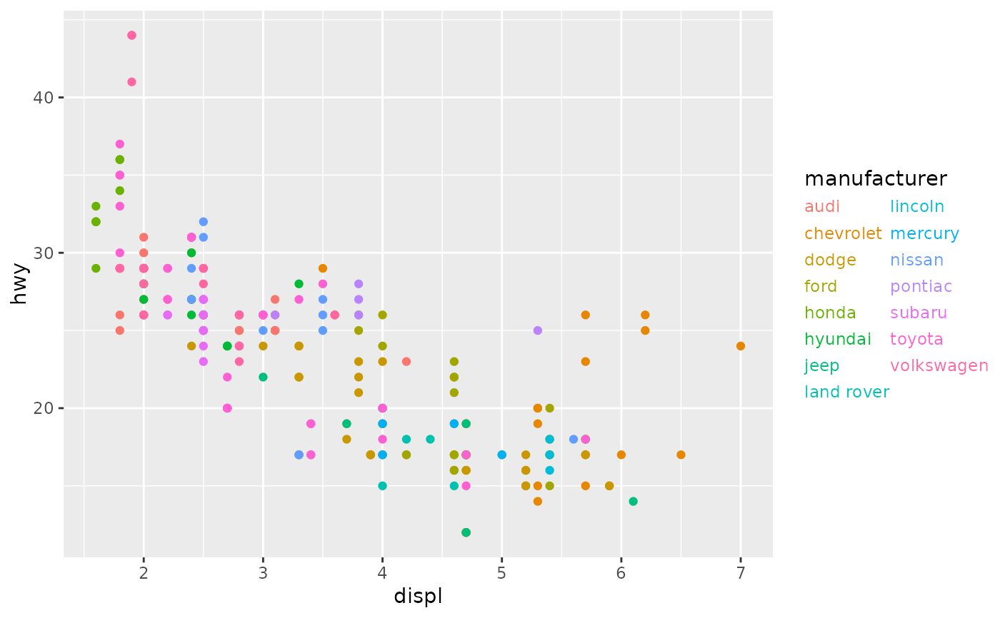
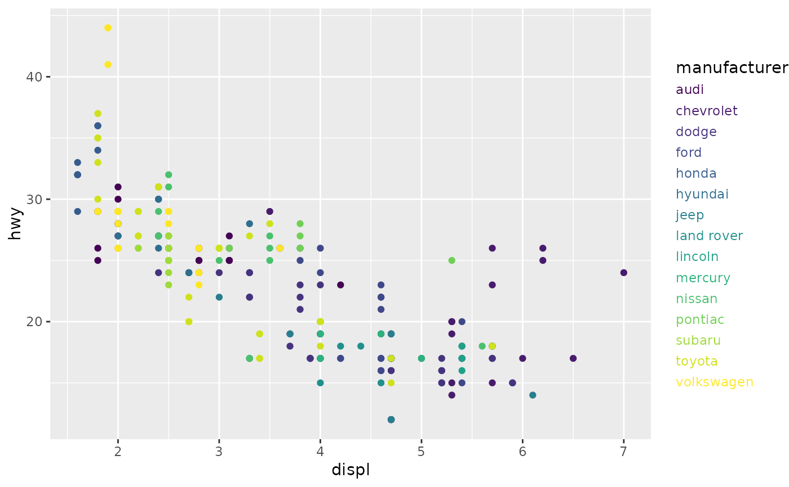

This type of legend shows colour and fill mappings as coloured text. It does
not draw keys as guide_legend() does.
Usage
guide_stringlegend(
title = waiver(),
theme = NULL,
position = NULL,
direction = NULL,
nrow = NULL,
ncol = NULL,
reverse = FALSE,
order = 0
)Arguments
- title
A character string or expression indicating a title of guide. If
NULL, the title is not shown. By default (waiver()), the name of the scale object or the name specified inlabs()is used for the title.- theme
A
themeobject to style the guide individually or differently from the plot's theme settings. Thethemeargument in the guide overrides, and is combined with, the plot's theme.- position
A character string indicating where the legend should be placed relative to the plot panels.
- direction
A character string indicating the direction of the guide. One of "horizontal" or "vertical."
- nrow, ncol
The desired number of rows and column of legends respectively.
- reverse
logical. If
TRUEthe order of legends is reversed.- order
positive integer less than 99 that specifies the order of this guide among multiple guides. This controls the order in which multiple guides are displayed, not the contents of the guide itself. If 0 (default), the order is determined by a secret algorithm.
Examples
p <- ggplot(mpg, aes(displ, hwy)) +
geom_point(aes(colour = manufacturer))
# String legend can be set in the `guides()` function
p + guides(colour = guide_stringlegend(ncol = 2))

# The string legend can also be set as argument to the scale
p + scale_colour_viridis_d(guide = "stringlegend")
